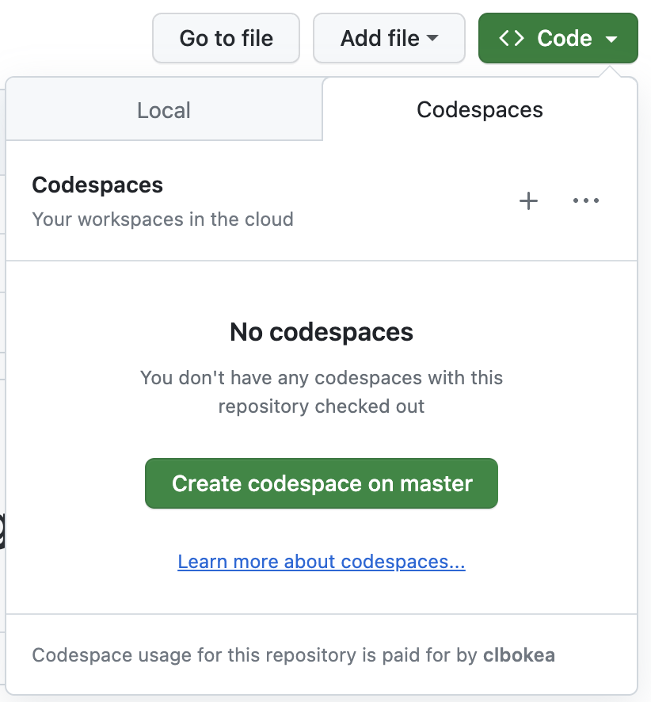
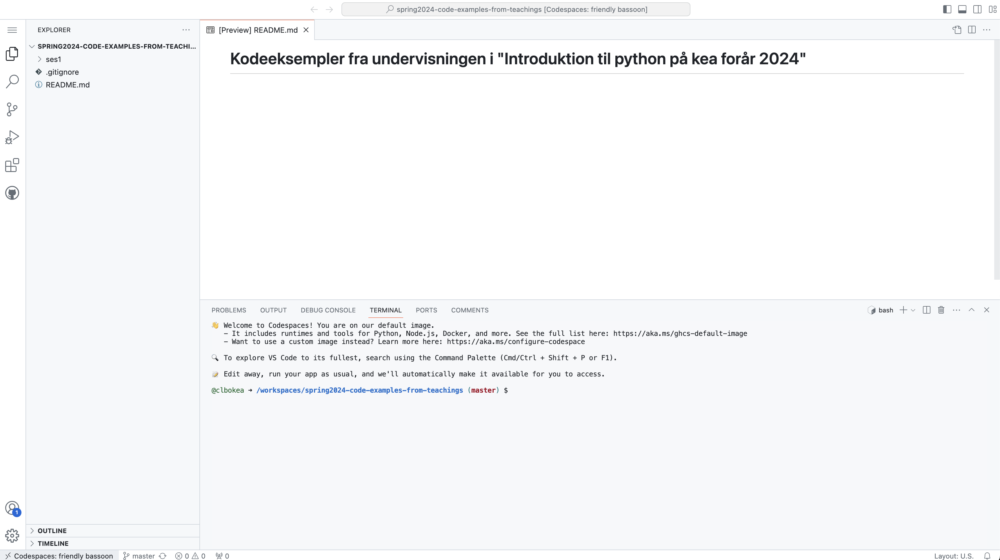

Software needed this semester
There are several IDE´s or editors you can use when programming in python.
In this elective your are free to choose whichever you like, but the best and easiest choise is to use Github codespaces. You can custormize this in several ways, but as default you will have a browser version of VSCode.
Github Codepsaces
In order for this to work, you will need to have access to github codespaces.
If you do not allready have that you can get it through GitHub Student Developer Pack
Working with the “Introduction to python” github repository
Browse to Introduction to python github repository
Click on the green “<> Code” button and then click on “Create codespace on master”

This will open a codespace like this:

This will be your editor in this elective.
Important: Working on branches
You should before doing anything else always create a new branch. (I exspect that you know how to do that).
The master branch is where all updates to the course material during the semester will happen. If you work directly on the master branch, you will have your files overwritten before every session starts (or at least have a lot of merge conflicts you have to solve).
So important!! Keep the master branch clean!
Never edit the files directly on the master!
Always create a new branch when you want to do something to the files.
Pull before every session
Before every session (every class) you should swich to the master branch and pull in the changes.
Then create a new branch (e.g ses2, ses3) and code along or do the exercises.
Save your work
You should remember to commit and push the changes you make in your branches.
This will make a “Fork” on your own account.